Permission is granted to distribute this work in electronic form, with the these conditions:
1) No fees may be charged for the distribution or transmission of this document, other than standard charges for use of transmission lines or electronic media. Distribution for commercial purposes or by commercial entities is specifically prohibited.
2) All copies distributed must contain the complete, unedited text of the original document and this copyright notice.
3) Persons acquiring the electronic version of this document may make one printed copy for their personal use. All other rights are retained by the author.
The Great Table (Plate 1) is divided into quarters, each of which is one of the Tablets of the Elements. These Tablets in turn are divided into quarters called "Lesser Angles", each attributed to a sub-element of the element of the Tablet. The original version of the Great Table gave the Tablets and Lesser Angles attributes as shown in Figure 1.
However, several years later the angel Raphael gave a revised Great Table to Edward Kelly, in which the positions of the Tablets within the Table were changed. Figure 2 shows the new positions. It is important to note that while the positions of the Tablets changed, no mention was made of a change in the elemental attributes of the Lesser Angles.1
Here we encounter the first and most serious of the ambiguities in the Enochian system. Dee's Enochian grimoire (written after the revised Table were received) shows that he believed that while the positions of the Tablets had been changed, the attributes of the Lesser Angles did not. They remained the same as shown in Figure 1.
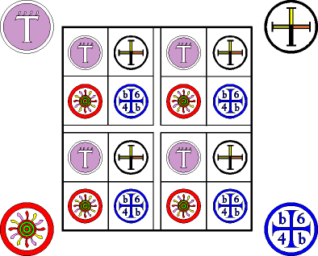
Figure 1. Tablet and Lesser Angle Attributes According to Dee
It is not possible to physically rearrange the Lesser Angles in the same manner as the Tablets. Several names and sigils for the governors of the Aethyrs cross the boundaries between Angles. Changing the arrangement would destroy the validity of that part of the system. The only two options are to assume that the Lesser Angle attributes remain the same, or to make the assumption that their original attributes were wrong, and change them to match the new arrangement. Dee clearly favored the first option; his listings of the angels' powers follow the older arrangement.
When the magicians of the Golden Dawn incorporated Enochian magick into their system, they followed the second assumption. The Lesser Angle of Fire became the Lesser Angle of Earth; Water became Fire, and Earth became Water. The divergent qualities of the four elements make this a drastic change. Since every modern usage of the Tablets stems from the Golden Dawn practice, it is possible that for over a century magicians have been using the Tablets incorrectly.
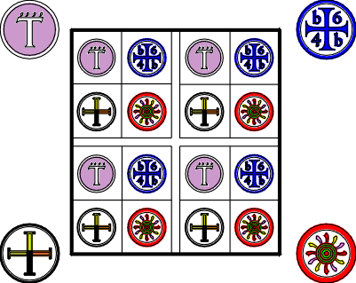
Figure 2. Revised Great Table (1587) with Golden Dawn Attributes for the Lesser Angles
Compounding the problem is the fact that no matter which set of attributes he uses, the magician typically gets results at least superficially in accord with the set he believes to be correct. For instance, invoking the angel ZIZA as a power of the sub-element of Fire in the Fire Tablet, produces fire-related imagery. Invoking the same angel while believing him to be a power of the subelement of Water will produce results confirming that assumption. It is even possible for the same magician to use different attributes for the angel in separate invocations, and get results conforming to those he is using at the moment. As with much else in the system, the Call being used and the intent of the magician seem to count for more than any intrinsic nature of the angels or their offices.
The choice of Lesser Angle attributes must then depend on considerations outside the system itself. If the magician has already been working with the G.D. version, or expects to work with it extensively in the future, then it would be better to follow their attributes. If the magician has never used their system, and never intends to, then using the original attributes might be the better choice. Consistency and constancy count for a great deal in making magick effective. It is better to continue using a system that might be wrong if you have learned to produce effective results with it, rather than starting over with a different system having questionable advantages. Either the original or G.D. system will work with the Enochian Temple techniques. The G.D. attributes of the Lesser Angles are arbitrarily used in this book, as these attributes are probably more familiar to modern-day magicians.
The Golden Dawn also assigned a series of attributes to each square within the Tablets, applying a convoluted and extravagantly ornate system of rules. Experiment suggests that they are not a reliable reflection of the natures of the squares. When they are used in astral visions, the results accord with the attributes assigned; when the magician invokes angels without insisting they show specific attributes, they typically reveal a significantly different nature. Later in this chapter, we will consider the problems with the G.D. system and offer an alternative system which both conforms to the natures revealed by invocation and avoids these problems.
The structure of the Tablets is clear-cut; there is no question that each lettered square belongs to a specific part of the Enochian hierarchy. However, there are many ambiguities concerning the formation of divine and angelic names from those squares, and even more questions surround their use in invocations.
Experiment can not help to determine a "true" or "correct" manner of usage. Enochian is a genuine magickal language; every letter not only signifies but invokes a force. Thus every combination of letters serves to invoke some assemblage of forces, and every combination and variation of the divine names will produce some result. Even "names" created by randomly assembling letters will sometimes call an angel to appearance, so long as one of the Calls is used. The desirability of the results with a particular usage is a different question, for which only experiment can provide an answer. Each magician should study the possible "legal" variations, and try them out in a systematic manner.
The cross that separates the Tablets in the Great Table is sometimes called the "Black Cross," due to its coloring in one of Dee's diagrams. Fig. 3.) This cross is usually assigned to the element of Spirit, and it serves two purposes: to bind the Tablets together, and to provide a path of communication and transformation between one element and the next. The names on the vertical arm read from the edge of the Table towards the center, while the names on the horizontal arm read from the center outwards. These names are extracted from the Great Table and used to form a separate tablet called the Tablet of Union. Certain letters from this cross are used in the formation of "archangelic" names within the Lesser Angles. Combinations of these names form the names of the three regions of the Aethyr ZAX.
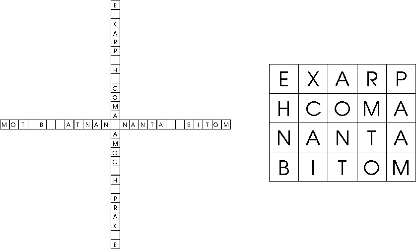
Figure 3. The Black Cross and Tablet of Union.
Within each Tablet a cross also separates the Lesser Angles, called the Great Cross of the Tablet. One row and two columns of squares form the Cross. The row is the "Line of the Holy Spirit," while the left and right columns are the "Line of the Father" and the "Line of the Son." (The names of the columns do not appear to have any direct relation to the actual nature of the Tablet.) The Great Cross contains three sets of names, created using different methods of reading the letters. (Figure 4.)
The God-names of three, four, and five letters are formed by reading the Line of the Holy Spirit from left to right. Thus in the Tablet of Earth these names are MOR DIAL HCTGA. The function of these names is to call the power of the creator to the magician, and to convert or filter that power into a form compatible with the element of the Tablet. This power is very rarefied, and while it is "colored" by the element of the Tablet it is not in itself an elemental force.
Next in rank is the Elemental King of the Tablet, formed by a spiral around the center of the Cross2. The function of the King is to concentrate the force called by the three Names of God, and to transfer that force downwards through all the planes represented by the Tablets. Dee's grimoire shows two forms of the King-names, each using only one of the two central letters of the cross. For the Earth Tablet, these would be ICZHIHA and ICZHIHL. The angels indicated that the first of these forms was to be used to invoke forces used for friendly purposes, the latter for works of anger, revenge, or punishment. Modern usage has generally been to include both these letters in one name, e.g., ICZHIHAL.
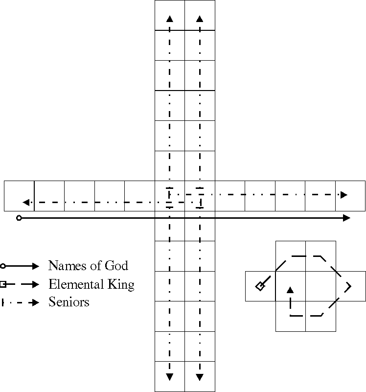
Figure 4. Formation of Names from the Great Cross of a Tablet
The names of the six Seniors of the Tablet are formed by reading outward from the two central squares of the Great Cross along each row or column. The angels said that the Seniors of the Line of the Holy Spirit could have names of either six or seven letters, the seven-letter version to be used "when the wrath of God is to be increased." Dee typically used both possibilities in his invocations. Modern practice has been to use the sevenletter versions at all times. Thus in the Earth Tablet, the names of the Seniors are (clockwise from the top left column) ACZINOR, LZINOPO, ALHCTGA, LIIANSA, AHMLICV, and LAIDROM.
Within each Lesser Angle are three different ranks of names, each again derived from a specific area. (Figure 5.)
A cross of ten squares in the center of the Lesser Angle produces two names having six and five letters respectively. The first comes from reading downwards on the long arm of the cross; reading left to right on the horizontal arm creates the second name. For the Lesser Angle Air of Earth, the names would be ANGPOI and UNNAX.
These divine names reflect (on a lower level) the functions of the three Names of God and the Elemental King with respect to the Tablet as a whole. The name of six letters is said to call forth the powers of the Lesser Angle, to create a generalized manifestation of the powers of the sub-element. The name of five letters commands those powers to obey the magician, concentrating them and putting them under his control.
The four squares above the horizontal arm of the cross produce four angelic names, called Kerubic angels or Kerubs in the Golden Dawn system. The names are found by reading from left to right, taking each letter in turn as the first letter of an angel's name, and looping around to the left to complete the name. Thus in the Lesser Angle Air of Earth, the letters BOZA produce the four Kerubs BOZA, OZAB, ZABO, and ABOZ. A god-name or archangel rules the Kerubic angels. Adding a letter from the Black Cross to the first Kerub's name creates the god-name.
The proper formation of the Kerubic archangel's name is another area of ambiguity. Dee's practice was to form the name using the letter on the Black Cross in the same row of the Great Table as the Kerubs in question. He used the letter "e" for Kerubs in the top row of the Table, "h" for those in the eighth row, "a" for the fifteenth, and "p" for the twenty-second. This seems unreasonable, since it includes the first and last letters of the Black Cross names for Air and Water, and ignores the names for Fire and Earth. The Golden Dawn practice was to use the first letter from the Black Cross name corresponding to the element of the Kerub's Tablet. There have also been reports of successful workings using the letter at the top of the cross of the Lesser Angle. I believe that in this instance the G.D. method employs the most reasonable assumptions. Using the G.D. method, the Kerubic archangel for Air of Earth would be NBOZA.
Each line below the horizontal bar of the Lesser Angle Cross is the name of a single angel, read from left to right ignoring the letter on the Cross. These angels are called "Servient" angels by the G.D., presumably because, unlike the Kerubs, they are subservient to the god-names of the Lesser Angle. The G.D. system assumes that there are actually sixteen Servient angels in each Lesser Angle, one for each square, with their names formed in the same manner as the Kerubs. Dee's records do not justify this assumption. The four names for Air of Earth are AIRA, ORMN, RSNI, and IZNR.
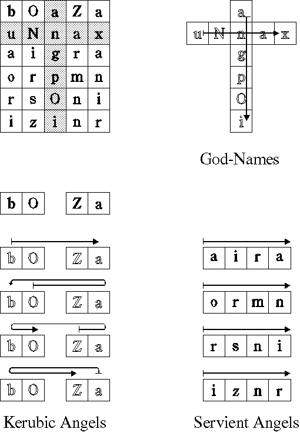
Figure 5. Formation of Names in the Lesser Angles.
The use of the various divine names in invocations is yet another area of ambiguity in the Enochian system. Practically every possible combination has been used at one time or another, and every combination has produced some result, provided that the names were used in conjunction with one or more of the Calls. If we examine Dee's grimoire, we find the hierarchies listed in Table 1.
Table 1. Hierarchies from Dee's Grimoire
For: Seniors Kerubic Servient Angels
----------------------------------------------------
Invoke: Elemental Kerubic god- God-name of 6
King name letters
Senior Kerubic Angel God-name of 5 letters
Servient Angel
but which have a direct alignment in ranking between the Enochian powers and those of other systems.
The key to finding an alternate system is to understand the primary blind spot of the G.D. magicians. They took the diagrammatic form of the Tablets as being of primary importance. That is, each square in each Tablet was a single power, and could only have a single attribute, which was determined by the visually distinct region of the Tablet in which the square was located. Thus every square in the Great Cross could only have a single attribute, and the attributes of all the Cross squares had to be related in some way. Similarly for the Lesser Angle Crosses. This severely limited their options, and made associations based on superficial numeric correspondences more attractive.
We can overcome this limitation by recognizing that the power expressed by a square does not depend on its position in the Tablet; instead it depends on square's position in a particular divine name. A square used in multiple names will have different attributes depending on the name under consideration, and its hierarchical rank. Thus where the G.D. allowed only one attribute for a Great Cross square, we can have as many as three different attributes, depending on whether the square is used in the Names of God, the Elemental King, or the Seniors. And in the Lesser Angle Crosses, the attributes of the names of six letters and of five letters can be considered separately, instead of as a single ten-unit structure. With this freedom, we can readily devise a system in which the relative importance of the attribute powers is congruent with the ranking of the names to which they are applied.
As was explained earlier, the Names of God invoke the power of the creator, and transform that power into a form compatible with the element of a particular Tablet. It has already been shown how the full twelve names relate to the zodiac, which is the interface between the Empyrean and the manifest world of the Tablets. Since the three Names in a given Tablet reflect the divine power for the ranks below them, it seems reasonable that the zodiac attributes of the larger set should be reflected into the individual letters of a single Tablet's Names of God.
Thus we assign each square an attribute to one of the zodiacal signs, reflecting in miniature the divine attributes shown above for the names taken whole. The left most square is given to Pisces, and the rest follow the same precessional order seen earlier, ending with Aries in the right-hand square. In this way every element's quarter has not only the major powers of its own three Names of God, but also a lesser but still effective sampling of all the divine powers from the sphere of the fixed stars.
The Kings and Seniors are generally believed to correspond to the Sun and planets. However, their energies and activity do not precisely reflect the nature of the planets in either astrology or cabalism.
The Sun is the symbol of centrality and of self, drawing together the functions of all levels of being, coordinating them in such a way as to create a highly interconnected and homeostatic system. The intense interaction produces a secondary radiance that in turn spreads throughout the system and beyond, an "aura" surrounding the whole. The Elemental King also serves a concentrating function, but it does so only for the power of the Names of God. It neither coordinates nor unifies the other powers within the Tablets. In this, it has more in common with the nature of Kether, the Primum Mobile, than it does with the cabalistic conception of Sol or Tiphereth.
If we take the Names of God as being a circle surrounding the manifest worlds, then the Elemental Kings occupy a position just inside that circle, each in the center of their respective quarters. As the powers of the Names of God move inward the Elemental King gathers a large portion and concentrates them into a point. The King then projects these powers (still in concentrated form) down through all the spheres of the manifest worlds.
The King does not distribute the power in the form of general radiance as the Sun does, but instead sends it down in an intense, laser-like beam. The beam is a power conduit, which the lower beings can tap into, converting the generalized power of the Names of God into the particular powers suitable to their own levels and position. These beings are not controlled in any way by the Elemental King; each acts strictly according to its own office and strictly within the realm assigned to it in the hierarchy of the Tablets.
While correspondences between the Enochian system and the Cabala are uncertain, the Elemental Kings appear to express something very close to an Atziluthic or "archetypal" power. That and the fiery nature of their activity would make them correspond to the Yod of IHVH.
The angels told Dee that the Seniors give "knowledge and judgment in human affairs." This is an accurate assessment, but needs to be expanded. The Seniors govern those levels of the Enochian universe wherein the primary activities are those of self-aware, self-willed beings. This covers not only mundane human activity, but also the spiritual and magickal activities of human initiates and several higher classes of beings. The planets are the dominant forces in those regions, so the attribution of the Seniors to the planets is appropriate.
The Seniors take force from the elemental King, diffuse it, and distribute it throughout the Tablets. They act as buffers, preventing the intense concentration of the King's power from burning up the structures of the lower, more mundane levels. They also act as collectors and return conduits, absorbing the excess force radiated by the lower powers in the Tablets, channeling that force upwards through the planes and back to the Atziluthic region. In this buffering and distributing activity, they express a Briatic nature, corresponding as a group to the element of Water and the first Heh of IHVH.
Beginning with the Seniors, the Tablet hierarchy begins to drift slightly away from the pure version of the concentric spheres cosmology present in the Calls. The traditional concentric cosmology gives each of the planets its own sphere, ranked as higher or lower according to their apparent rate of motion when seen from the Earth. Even though the Seniors correspond to the planets, they have no rank among themselves, and the power of each covers several planes. A similar problem occurs with the Lesser Angles, as the powers having the same office in different Lesser Angles are essentially equal in rank, and act on several different planes.
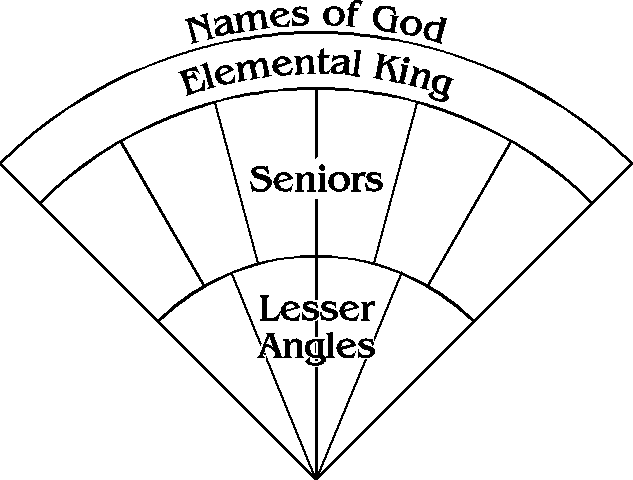
Figure 8. Concentric System of Organization for the Tablet Names
A modified concentric model will still work. Figure 8 shows how this modification would work for a single Tablet in the Great Table. Here the Seniors and Lesser Angles cover radial sections of their regions, rather than each having its own ranked sphere. As a group, the Seniors could govern several concentric levels.
Before considering the attributes of the squares we should look at the correspondence between each Senior and a planet. This is one instance where the Golden Dawn system appears to work well; my practice has generally confirmed their attributes. The angels have suggested that one minor modification would bring the G.D. attributes fully into line with their creator's intent.
The Seniors' names radiate outwards from the center of each Tablet's Great Cross. Starting with the upper left column and going clockwise, the G.D. attributes them to Jupiter, Luna, Venus, Saturn, Mercury, and Mars. The angels suggest it would be appropriate to switch the attributes for the Seniors assigned to Mercury and Luna, placing Mercury in the upper right column and Luna in the lower left column. The explanation for this change is that doing so would more accurately reflect the flow of force among the Seniors.
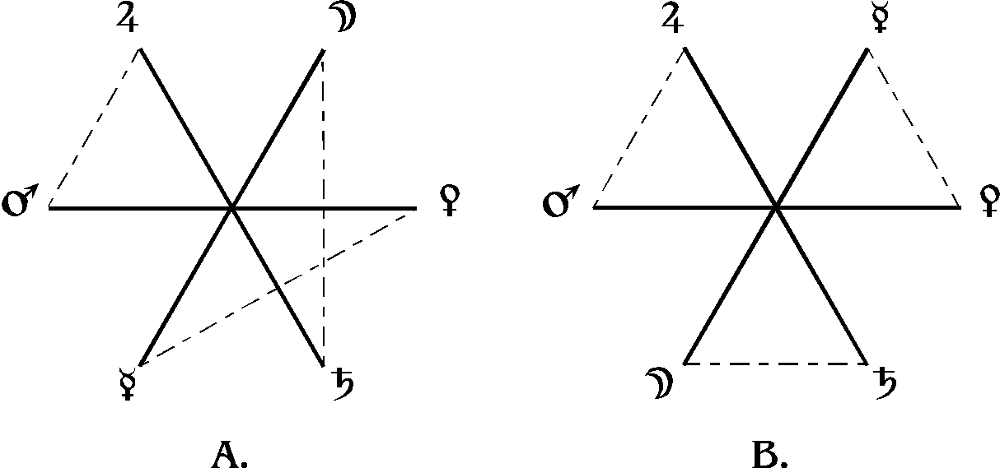
Figure 9. Power Flows Among the Seniors
A) Golden Dawn attributes B) Modified attributes
Figure 9 shows what this means. Figure 9A shows the G.D. attributes. If we follow the planets from point to point in their natural order (i.e., Luna, Mercury, Venus, Mars, Jupiter, Saturn) the dotted lines show where we have to "jump" across from one arm to the next to continue the sequence. One of these jumps is short while two are longer; All the jumps are towards the same side of the cross, so the overall flow is unbalanced.
Figure 9B shows the modified attributes, and the effect the change has on the flow. Now the jumps are all of equal length and balanced around the circumference of the arms. Again, I have no idea whether this change is "true" in any absolute sense, but I have tested it and it seems to result in a stronger, clearer manifestation of power for the two Seniors involved.
The Golden Dawn never developed specific attributes for the letters of the Senior's names, relying instead on their system of decanate attributes; nor do Dee's records provide any plan that we can use. However, we can devise a reasonable and self-consistent system that reflects both their equal rank and their governance of several planetary levels.
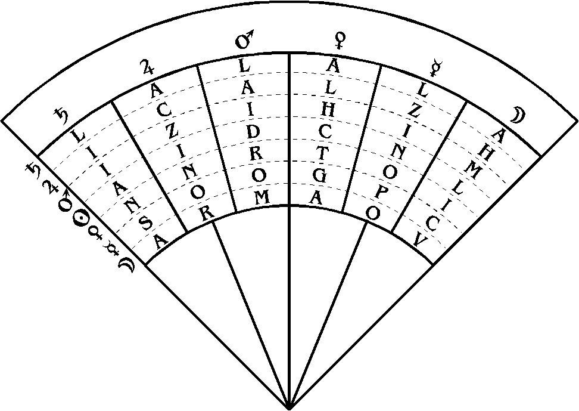
Figure 10.3 Relation of the Seniors to the Planetary Spheres
Since the Seniors take their power from the Elemental King, we assume that the Seniors' power moves from the outside spheres inwards. We assign their names to the six sectors in Figure 8, writing the letters from the outside towards the center. Drawing circles between the letters to represent the planetary spheres, we get a diagram as shown in Figure 10 below. The Earth Tablet is used as an example.
Thus one letter of each Senior's name governs a particular region of a single planetary sphere. Together, the Seniors govern an entire sphere through the letters of their names positioned on that level.
The ranking of the planetary spheres follows the traditional sequence of medieval cosmology and the Cabala. And through its connection with the planets, the Tree of Life is raised up from it's microcosmic position in the G.D. system, and accorded a place more in keeping with its true importance. We can validly connect each letter of a Senior's name with one of the Sephiroth, with the letter of Binah standing in for all three of the Supernals.
The Names of God and the Elemental King can together be considered as expressing the power of the sphere of Chokmah. In the cabala, Chokmah is associated with the Sphere of the Fixed Stars, the Zodiac, and so would be an appropriate connection for the three Names. But Chokmah is also the sphere of the Father, the "expressed will" of the divine; the concentrating and activating power of the Elemental King, with his phallic "channel of power," would fit well with this aspect of the sephira. Kether, in this system, would not be an expressed power. As the angels told Dee, there was one Call that they did not give him; the Call that would invoke the power of God directly. The pure being of God is not present, and so in terms of the Tablet hierarchy, Kether is invisible.
But as mentioned before, we should not strain too much to make such connections absolute; the Enochian system defines its own view of the universe, and its relation to the Tree is more suggestive than binding. As will be seen in the following section, the connection of the Tablets with the Tree must involve some overlap in range between different ranks of beings.
In the Lesser Angles we move out of the macrocosmic levels and into the microcosm. The pattern becomes more detailed here, due to the larger number of names involved. We see more going on because the levels involved are those that are natural to us as human beings; events operate on the scale we can directly comprehend. At the same time, the scope of action of the angelic powers is smaller than for those that came before, because the spheres involved are smaller in volume.
Each Lesser Angle as a whole embodies the process by which material substance, subjected to the force of the divine, is brought to a state of perfection and purity. As such, it has two parallel hierarchies. In one of these, spirit rules over matter but remains separate and distinct. In the other, the spiritual and material have been fused; the matter itself has become purified, perfected, and transmuted into a divine expression, while still retaining the essence of its original nature. The first of these hierarchies contains the names on the cross of ten squares (hereafter called the "L.A. Cross") and the Servient angels. The four Kerubic angels and their godname form the second.
Figure 11 shows the spherical positions of the names in these two hierarchies for a single Lesser Angle. The two segments shown are actually one segment looked at in two different ways. The powers in the two hierarchies interpenetrate and in their combination constitute the Lesser Angle's portion of the cosmological sphere. Also note that each Lesser Angle reflects the same pattern seen at the macrocosmic level. That is, two ranked Names govern the entire region, followed by several names of equal rank in a subordinate position. Figure 12 shows the pattern for an entire Tablet to make this clearer. Thus this spherical conception of the Tablets conforms to one of the prime rules of magick, "That which is below is as that which is above."
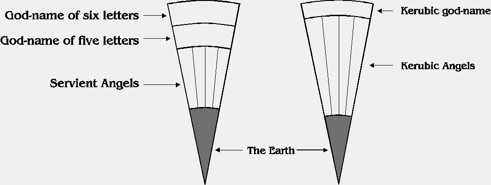
Figure 11. Spherical organization of the Lesser Angle Hierarchies
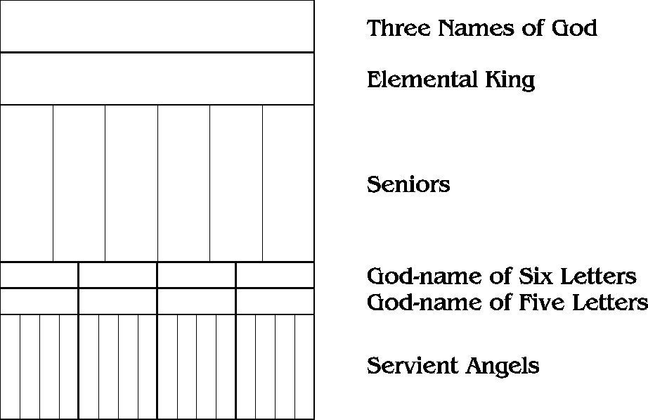
Figure 12. Spherical arrangement of an entire Tablet
In the first of the two Lesser Angle hierarchies, the L.A. Crosses correspond to the Sun ruling over the natural worlds. They therefore correspond as a class to the Vav of IHVH The servient angels, as the material on which the Crosses act, correspond as a class to the final Heh of IHVH.
In the other hierarchy, the air and the earth have been fused into one, and brought directly under the governance of the Spirit. The Kerubic angels represent the Vav-Heh of IHVH, both the Yetziratic and Assiatic worlds. This is under the "vertical" expression of IHVH, its application to the planes of the Tree of Life as a ranked hierarchy.
At the same time, the Kerubs represent a purified expression of the four elements as they manifest within a given plane, wherein there is no ranking between them. In this latter form, the Kerubs are in themselves a complete representation of IHVH. The Kerubic god-name adds a letter from the Tablet of Union. It represents transubstantiation of the elements into a divine substance by the addition of spirit, producing IHShVH, the Savior or Son of God.
Both in cabalistic and astrological symbology, the Sun is the great centralizing power, containing all other powers within itself, both those of the planetary spheres and those of the purely elemental spheres. It also reflects or channels the powers existing in the macrocosm into the microcosmic or elemental spheres. The L.A. Crosses contain both of these symbologies.
Looking at a whole Tablet, we can see a pattern of six Seniors having planetary natures presiding over four Lesser Angles having elemental natures. The L.A. Crosses reflect this pattern down into each Lesser Angle, maintaining the symmetry of the system. However, while the symbolism reflects the Seniors versus the Lesser Angles, the functions of these names appear in practice to resemble more those of the three Names of God and the Elemental King.
The name of six letters is said to call forth the powers of the Lesser Angle; in practice it can be seen to produce a cloud of generalized sub-elemental force around the magician. This is similar to the cloud of spiritualized quasi-elemental force produced by the Names of God. The name of five letters is said to command the forces to obey the magician. In practice it concentrates, focuses, and organizes the forces, causing them to take the circular motion that magicians call a "vortex". This is similar to the whirling motion by which the Elemental King concentrates forces at the higher level, though the name of five letters never achieves the same degree of concentration.
The Golden Dawn attributes of the L.A. Crosses acknowledge that they reflect the larger six-and-four pattern of the Tablets. Six of the planets are assigned to the highest six squares of the crosses (the planet Saturn is ignored) while the remaining four squares have no planetary attribute. There is an additional overlay of symbolism, assigning each of the squares to the Sephiroth.
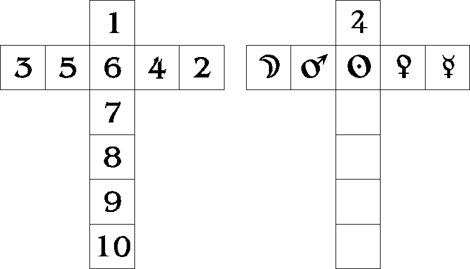
Figure 13. Golden Dawn Attributes of the L.A. Crosses
There are problems with both these sets of attributes. The Tree of Life connection appears based, like the decanate attributes of the Great Cross, solely on a fortuitous coincidence of number and an eagerness to pack as many different symbols as possible into their system of attributes. They ignore the Enochian system's internal evidences of structure, and the absence of any references to the Tree in Dee's records.
The planetary attributes are more plausible, but fail for two reasons. First, the attributes are applied across two different divine names in such a way as to leave part of one name without attributes. Second, the attributions do not accurately reflect the higher level of the Tablet that is being echoed in the L.A. Crosses. Saturn has an equal place among the Seniors, but it is not present among the planets used in the Crosses. At the same time they relegate the Sun to a single square, destroying the symmetry between the two hierarchies within the Lesser Angles.
A different scheme would correct the problems with the planetary symbology, while also preserving both the elemental aspect and the function of the Cross as the symbol of the Sun/Son. In this scheme, the six letters of the vertical arm of the Cross are assigned to the same planets as the Seniors, with the attributes the same as in the letters of the Seniors' names. That is, we assign the top square to Saturn, and the remaining squares take the attribute of the other planets in order of cabalistic rank. The Sun is not included because the entire Cross embodies his power.
The name of six letters is the power of the divine Father and Mother, as it descends into the microcosm through the mediation of the Son or Sun. In the explorations that discovered these attributes, the planetary symbology of this name was overlaid with a second consistent symbology, which is expressed in the magickal formula AHIHVH, the merging or coalescence of the macrocosm, AHIH, and the microcosm, IHVH. This combination of symbologies prevents the six-letter names from being a mere duplication of the Seniors on a lower level. This formula, and the others relevant to the Tablets, will be described in more detail in the next chapter.
The third member of the Father-Mother-Son is embodied in the L.A. Cross name of five letters. With the planets all now in the six-letter name, the squares on the horizontal arm are free to be given elemental aspects. And the angels have combined the elemental and Father-MotherSon symbologies by giving this name the power of the True Son, in medieval belief: IHShVH, Yeheshua, the Savior. The letters of this name are attributed, from left to right, to Fire, Water, Spirit, Air, and Earth.
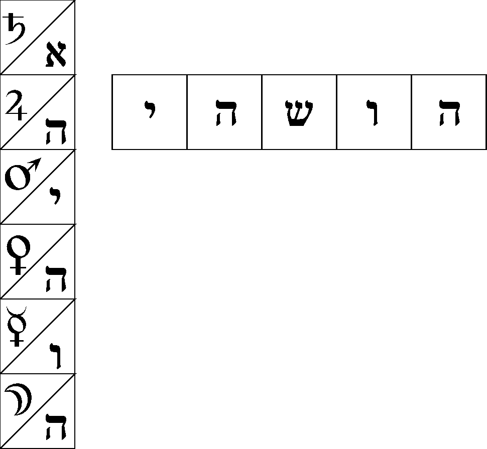
Figure 14. New attributes of the L.A. Cross names.
In my dealings with them, the angels have never insisted on using a Christian symbology. Indeed, they have sometimes shown contempt for the human churches and their doctrines, thinking them silly or unrealistic. But in the present instance they have been adamant on the connection between this name and the symbolism of the Son as Savior. What is being "saved", they say, is matter itself.
The universe, they say, is full of "dark" matter; that is, matter which has not yet been incorporated into the activity of a creator and is thus "unredeemed". The function of this name is to take the divine impulse, represented by the name of six letters, and apply it to unredeemed matter. The matter is thereby brought into a state of activity above its normal state of total quiescence and negativity, is "raised up" to a level where it can come under the activity of the so-called Servient angels. In the process, the matter is formed into elementals, the most basic form of magickal being.
The Servient angels act on these elementals, train them and condition them to conform their activity to the impulse of a divine creative power. Their initial chaotic forms are made regular, conforming to their primary natures. The elementals then take their place in the normal creative activity taking place on this planet. Through this process they are eventually brought to a state of relative perfection, where they come under the rulership of the Kerubic angels.
The attributes of the Servient angels combine those of the five-letter Name of God with those of the Kerubic angels, so we should next consider the Kerubs.
The Kerubs express a quality of purity and fixity. Their expression remains the same, no matter the plane or kingdom in which they are acting. Experiencing their energy in invocations, I get the sense that they have gone through an alchemical process of purification, so that only the essence or perfect metal remains out of the mass of substance from which they came. They are so pure in nature that nothing can touch or change them. Like natural law, they are the essence of all things manifest; like natural law, the constant change of the manifest world touches them not at all. They ever remain themselves.
The Kerubs have a significantly larger range of action than the Servient angels. They touch every level of the microcosm. In some ways they go even higher than the powers of the L.A. Crosses, effectively bypassing the solar influence and dealing directly with God. The power that rules them takes its divine element from the Tablet of Union, completely outside the spherical system represented by the rest of the Tablet. This means that the entire macrocosmic expression of the Tablets is bypassed as well. This is a parallel with the way in which the Second Call, which creates the "structure" or substance aspect, is out of the sequence shown in the other Calls, which create the things that fill and elaborate that structure.
The implication of this separation of the Kerubs is that the creation of matter was separate from the creation and development of the world itself. As was mentioned in discussing the Calls, a modern version of the medieval cosmology requires that we view our sphere of creation as being only one of many such spheres within the universe. Each of these spheres has its own themes, its own different style of creativity being worked out. Each has its own "prime creator", who defines the themes being worked out within his sphere of influence. 4
By the principles of physics, matter must express the same characteristics and behavior everywhere in the universe without exception. We must therefor consider that matter was made prior to the creation of the various spherical regions, and made in such a way that it could be used for a huge variety of different creative themes. The "first creator", who made the substance that all subsequent creators have used in their works, embodied certain specific but highly flexible principles in that substance. The Kerubs in turn embody those principles as they work out in the sixteen subelements of the Tablets.
Here again we encounter a quasi-Christian symbolism, for the magickal formula expressed by the Kerubic angels is INRI. Christian myth says that these letters represent the sentence "Jesus of Nazareth, King of the Jews", but here they are used instead as a representation of the dynamic process of creation as it is embodied in the four elements. This symbolism will be covered in detail in the following chapters. Here it is sufficient to say that the letters correspond (from left to right) to the elements of Air, Water, Fire, and Earth.
The so-called "Servient" angels govern the elements as they manifest in the natural world; they represent the movements, changes, and transformations of state that make up the activity behind all four kingdoms in nature. Each Lesser Angle appears to have a close relation with one of these kingdoms; Air to Humans (considered as natural, not spiritual beings), Water to the Plants, Earth to the Mineral kingdom, and Fire to the Animal. This relationship remains the same in all the Tablets; each Tablet, in its own way, touches all the kingdoms, and governs portions of the activities therein. A high degree of redundancy is also present; squares in different Tablets seem to touch on the same activities, but view them from slightly different perspectives.
These angels express perfectly the astrological concept of mutability; their apparent expressions undergo constant change as their energy passes from place to place. In no place are they ever the same as any other, yet behind their changing expression there is a constancy of principle at work. It would be futile to try to list any significant portion of their functions; explorations will reveal that they cover a vast range of events within the world.
In addition these angels function as teachers or trainers for the elemental beings raised up through the power of the Names of God in the L.A. Cross. The quality they attempt to instill in the elementals is responsiveness or active intelligence, the ability to react quickly and perfectly to an outside impulse. The matter out of which the elementals were raised was, in its normal state, completely inert and unresponsive; learning to react constitutes a significant change of nature for them. The angels perform their training by directing the elementals in the action of natural processes, and activities done under the direction of magicians.
Each letter of each Servient angel's name embodies dual elemental attributes. One of these attributes derives from the Kerubic angels, and is therefor governed by the INRI formula; the other derives from the "saving force" of the five-letter Name of God, and is governed by YHShVh. Thus as a group they "save" or "redeem" the matter with which they work, through the application of universal dynamic laws.
The INRI attribute of a given square is determined by reference to the Kerubic letter at the top of the column. Thus a square in the first column on the left is attributed to Air of INRI, the next to Water of INRI, and so on.
The influence of YHShVH is represented in the attributes given to the rows of letters; thus each Servient angel works out a single "letter" of the process of salvation. The spiritual influence of the letter Shin is not used in their attributes, but only the four letters of the "normal" elements. The Spirit can be considered as invisibly present throughout their activities.
But unlike the usual use of IHVH, in the Servient angels the attributes are applied from the lowest row upwards. This is because the unredeemed matter on which they work is symbolically "below" them, and has to pass through the four elemental stages in order. Thus the lowest row corresponds to Fire, the next to Water, the third to Air, and the highest row to Earth.
The Golden Dawn devised a technique for using visualizations of truncated pyramids for starting off visions of individual squares from the Tablets. Unlike their system of attributes, this practical method has been proven by use to be very effective, and works just as well with the attributes given here. The Temples of the tablets use an elaboration of the technique, and practice with the simple pyramids is a good precursor to that work, described later in this book.
The basic technique is to build a hollow truncated pyramid in the imagination. The flat top has an area one ninth the area of its base. The relative sizes of the top and bottom means the sides are tilted inwards at an angle of forty-five degrees.
The magician visualizes the letter of the square on the flat top, in either English or Enochian characters. Color each side of the pyramid in a color related to an attribute of the square. Then various sigils, symbols, and images are visualized on the sides.
The pyramid is visualized as being large enough to stand on the top. Having vibrated the appropriate Calls for the name in which the square lies, the magician then visualizes himself standing on top of the pyramid in his astral body, and vibrates the hierarchy of names. As he vibrates each name, the magician imagines the power of that name gathering around the pyramid.
When the last name is vibrated, the magician imagines that each side of the pyramid is gathering in the attracted energy, each taking the type appropriate to its attributes and symbols. This energy is seen moving upwards, being focused as it goes by the narrowing of the sides. The flows of energy from the sides reach the top simultaneously, run into each other, and form a beam of light shining up into the astral worlds. The magician then follows this beam in his astral body until a landscape or other scene forms around him. This scene should symbolize various aspects of the square invoked. The usual techniques of astral visions are used from that point.
I prefer a variation of this method, in which the magician stands inside the pyramid. When the energies traveling up the sides reach the top, they come together on the letter and then shine downwards into the pyramid, illuminating the interior. The angel governing the square is invoked to visible appearance within the pyramid and is tested there. After testing, the angel conducts the magician to various scenes that illustrate the square's nature.
Table 3 shows a complete listing of the attributes for pyramids using the system presented here. For quick reference, the colors associated with various attributes are shown in Table 4. Note that the colors for the planets follow their path attributes rather than their connections with the Sephiroth of the Tree of Life.
Table 3. Pyramid attributes for the Names as used in this book.
Name type North West East South
(top) (left) (right) (bottom)
------------------------------------------------------------
3 Names of Spirit Zodiac Element of Spirit
God sign the Tablet
Elemental Spirit Letter's Element of Spirit
King attribute the Tablet
to
(7-letter planetary
versions sphere
of name)
Seniors Spirit Letter's Senior's Element
attribute attribute of the
to to a Tablet
planetary planet
sphere
L.A. Cross Sun or Element of Element of Square's
Name of 6 Spirit Lesser the Tablet attribute
letters Angle to a
planetary sphere
L.A. Cross Sun or Element of Element of Element
Name of 5 Spirit Lesser the Tablet of the
letters Angle column
(spirit
for central letter)
Kerubic Element Element of Element of Element
Angels of the Column Column of
Tablet Lesser Angle
Servient Element Element of Element of Element
Angels of the the row the column of the
Tablet (IHShVH) (INRI) Lesser Angle
The symbols on the sides of the pyramid serve primarily to remind the unconscious part of the magician's mind of the attributes being used, and to stimulate it to produce stronger and more far-reaching connections to the magickal universe. These symbols may be as simple or elaborate as the practitioner wants to make them. The following suggestions are not rigid; vary them as seems appropriate from your experience.
The area of elemental attributes has the greatest potential for confusion, so making a clear distinction between the various sources of attributes is important. For the element of a Tablet or Lesser Angle, use the Enochian sigil of the element, or the Wheel for Spirit. For a side representing a IHVH or IHShVH attribute, use the Hebrew letter. And for INRI attributes, use the corresponding fixed sign of the zodiac, to which the formula is closely related.
Among the letters with planetary attributes, such distinctions do not appear to be as important; using the standard glyphs of the planets works well enough. As an alternative, you can distinguish by using the standard glyphs alone for a "pure" planetary attribute, as in the Elemental King. Combine them with the magickal image of the corresponding sephiroth for pyramid sides representing the "sphere" attribute of a letter in a Senior's name, and with the appropriate letter of AHIHVH for the six-letter Names of God.
Table 4. Color attributes of the elements, planets and signs.
Elements Planets Signs
---------------------------------------------------------
Spirit white Sun orange Aries red
Air yellow Luna blue Taurus red-orange
Water blue Mercury yellow Gemini orange
Earth black Venus emerald Cancer amber
Fire red Mars scarlet Leo lemon yellow
Jupiter violet Virgo yellow-green
Saturn indigo Libra emerald
Scorpio green-blue
Sagittarius blue
Capricorn indigo
Aquarius violet
Pisces crimson
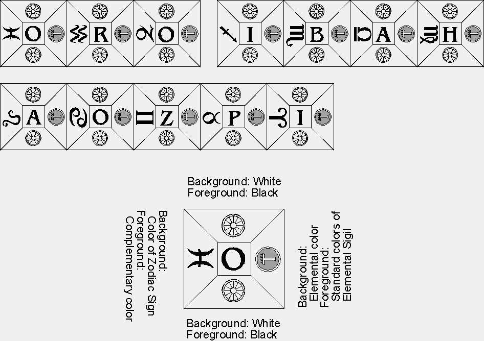
Figure 15. Pyramids for the Three Names of God in the Air Tablet
Figure 16. Pyramids for an Elemental King
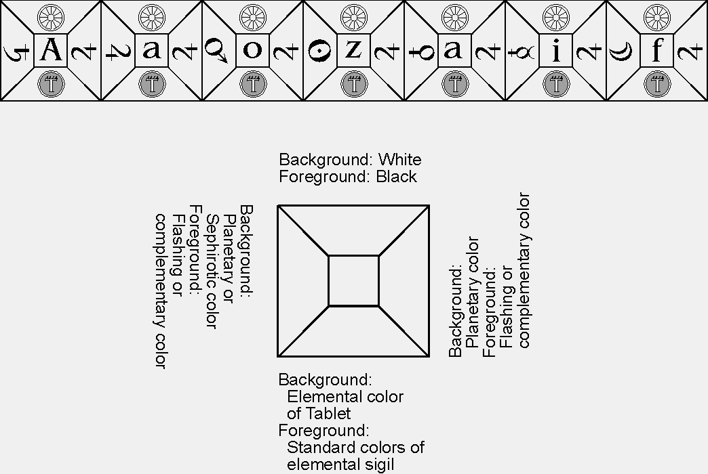
Figure 17. Pyramids for a Senior of the Air Tablet
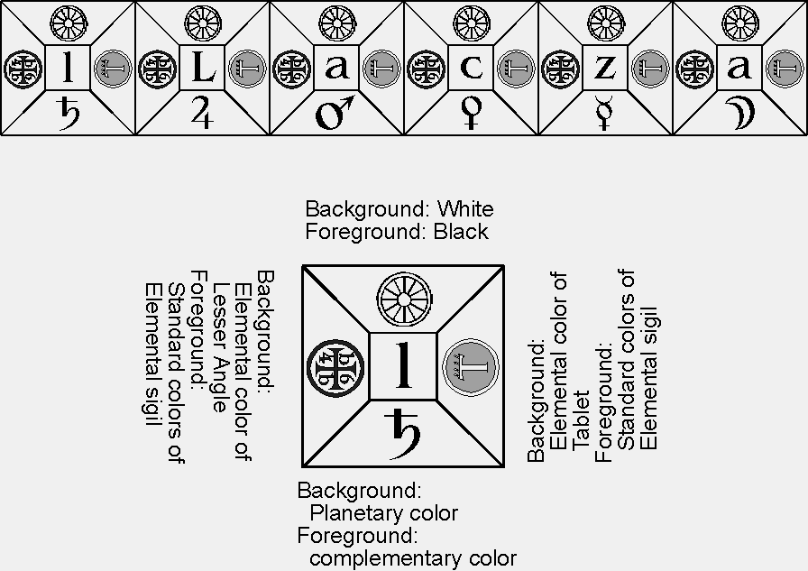
Figure 18. Pyramids for a 6-letter Name of God
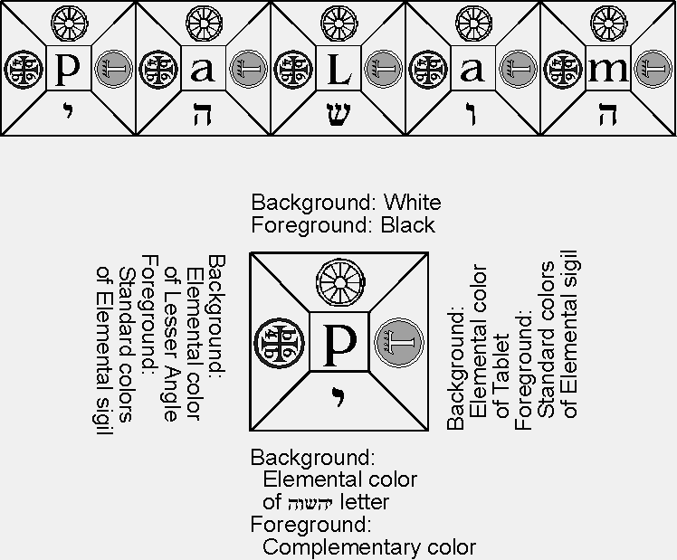
Figure 19. Pyramids for a 5-letter Name of God
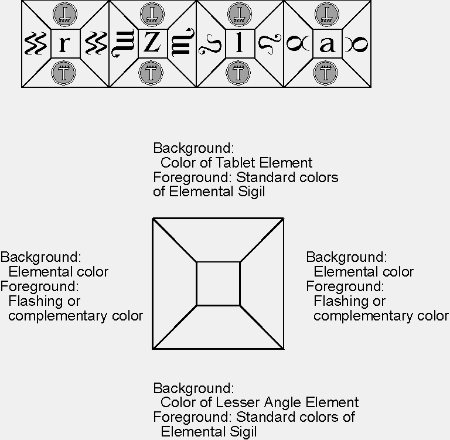
Figure 20. Pyramids for Kerubic Angels

Figure 21. Pyramids for Servient Angels